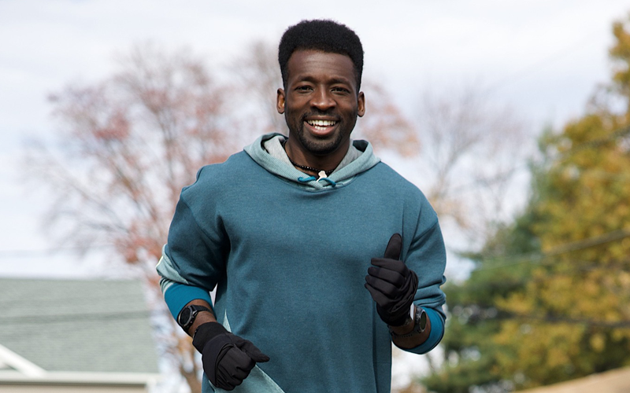
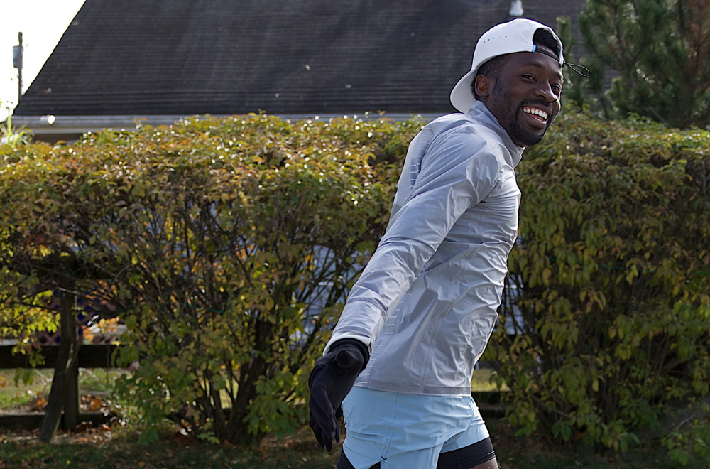
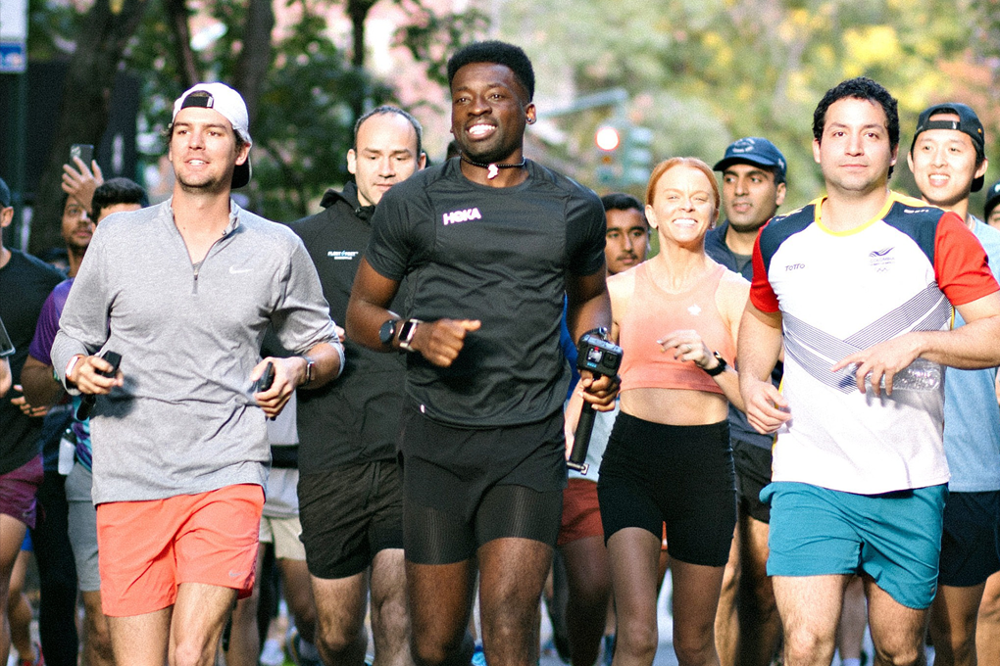
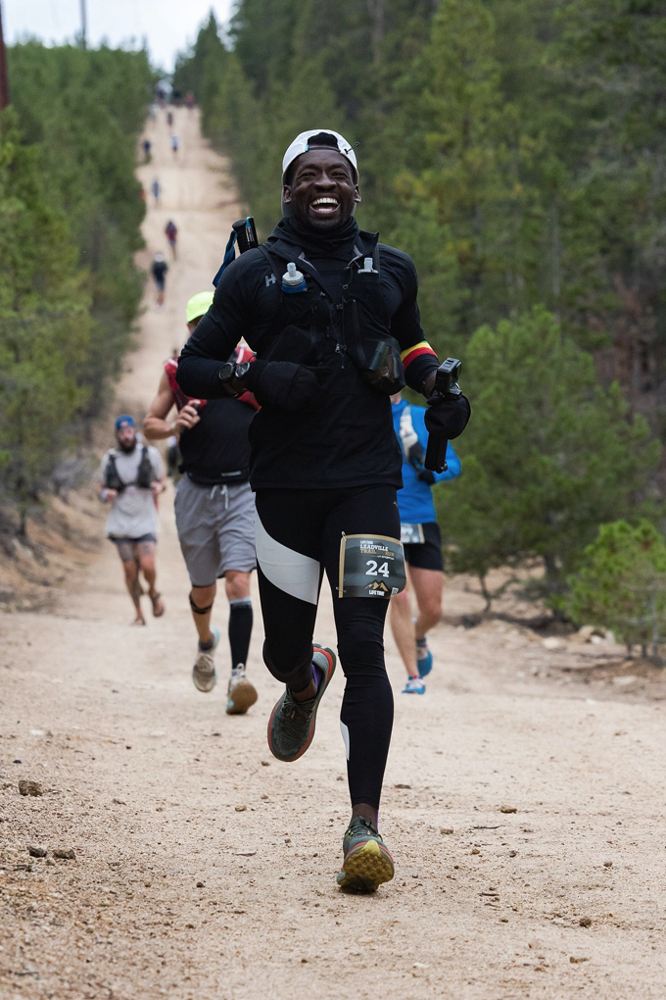

Going Further Together with Human of HOKA Hellah Sidibe
-

What's up my beautiful people?! I'm known on Instagram and YouTube as Hellahgood, but my parents named me Hellah. My running journey started with a goal to run every day just 10 minutes for 2 weeks. You'll come to learn that I quickly fell in love with it but that wasn't always the case.
I was born and raised in Mali, West Africa, in the capital city of Bamako. I was the third born of four and my name wasn't actually supposed to be Hellah. In my village most males are named Tiemoko and are differentiated with a nickname. When my mom was pregnant with me, however, my dad had the same dream every Thursday for three weeks before I was born about naming me after his father. The next Friday, Hellah Sidibe was born.
Growing up I always wanted to be a professional soccer player. Soccer brought me and my friends back in Mali so much joy. We were all inspired and looked up to the pros we'd see playing on TV. We loved pretending to be them and trying the moves they would do during games. Playing in the streets of Bamako with my friends was the only thing I looked forward to every day after school and all day on weekends until it was time to go home to eat, and then we'd go back out again to play until sunset. It was our escape and we didn't need much to play; just a ball and a small space and we were set. All the kids in the neighborhood would fill the dirt fields playing, and if we weren't out playing, you could find us watching the Premier League of England games or Ligue 1 of France. My favorite soccer player was Ronaldo Nazário of Brazil. I loved the way he played and I always imagined being in his position one day but instead representing Mali.
“Hellahgood” was born in college. It was a name I started getting called on the field by fans and friends and it just stuck. Whenever I'd introduce myself people would be surprised and skeptical on whether Hellah was really my name. I've always been told I had the type of name that was meant to be known.
-

After college, I went on to play soccer with the Seattle Sounders FC and their affiliate team, the Kitsap Pumas. With my immigration status I faced some issues that ultimately made it tough for me to move forward with a lot of teams I played with. Teams are able to take on a certain number of foreign players to their roster and usually didn't have space to sponsor me as a foreign player. My best option was to become a citizen and not have to depend on a foreign roster spot but becoming a citizen is a long and enduring process depending on your Visa status. The process took about twenty years for me, but it was six years after college while pursuing a career in soccer. Although it ended positively for me, it came about three years too late. On February 27, 2020, I became a US citizen. An American.
After spending most of my life pursuing soccer I was kind of lost when things didn't work out how I imagined in the end. At the time I wouldn't have believed you if you told me I was going through depression but now I do believe I was. Something that I loved and was holding onto so tightly was something I just couldn't grasp any longer. It felt like losing a part of me and losing my passion entirely. I didn't know what my purpose was anymore and it was one of the hardest things I'd ever gone through. I think a lot of athletes and competitors can relate with the feeling of disappointment in themselves. Even though deep down I knew I gave everything I possibly could, knowing that it wasn't enough was a really hard pill to swallow. I want any athlete out there going through something similar to know that sometimes we don't realize that what we're focusing so hard on and holding onto so tightly is what's preparing us for what was always meant for us in the end.
I've always been really interested in modes of transportation. I'm fascinated by how they work, whether it be planes, trains, boats, cars, etc. On my first flight to the US, I had the opportunity to go into the cockpit and speak with the pilot. This inspired an additional dream of wanting to become a pilot. In high school, I took aviation courses at a local college but didn't get very far while not being a US resident or citizen at the time. After college, I spent a lot of my free time watching car videos and one of the car YouTubers I watched a lot, Paul Wallace, made a video about his New Year's resolution to give running a try in 2017. It sounded so simple. I remember thinking to myself, “this guy isn't even an 'athlete' if he can run, I think I can too!” I'm not sure if he ever finished his goal but he inspired mine.
-

“I'll run 10 minutes every day for 2 weeks.” Easy. I wanted to change myself as a person and face something I was afraid of and most important of all, hold myself accountable: make a commitment and stick to it. Running was a big fear of mine and I went for it with the mindset of doing my best, no matter the circumstances. I invited my girlfriend at the time (now fiancé) to join and we started. Most people don't know this, but we started a couple days before the date I call my run anniversary. I call May 15, 2017 my start date because it's the day I started tracking my streak via GPS. After the second or third day, I increased my time and distance because I was actually enjoying running for once. I think going into it with no pressure allowed me the space to do that.
My relationship with running up until that point wasn't a great one. Growing up playing soccer meant a lot of running, but it was mostly for punishment. I could run all day if it meant there was a ball at my feet, but when it came time to do running drills, it felt like the toughest thing I'd ever done. I spent many late nights nervous for early morning pacer tests. Even though soccer was always my dream, I think it was just preparing me for running. I didn't go into my run streak with any thought of sharing it. It was something I wanted to do for myself. I just so happened to choose something I always hated and it turned into something I love. Life works in mysterious ways and I'm glad I watched that YouTube video that day. Who knows where I'd be if I hadn't!
The first YouTube video my fiancé and I posted was on day 163 of my run streak. It started to take off a couple months after we shared it and people were really interested in the streak. The most popular question, of course, “how can you keep up a run streak?” Keeping up a run streak, especially in the beginning, can sometimes be complicated. When I started the streak, I was working a 40 hour work week in an office and running either before or after work. I know some people with a run streak who will get their run in on their lunch break! That's some serious dedication. For me, the craziest thing I had to do to keep my streak alive was strategically break up a flight to Australia and keep my time zones set on my phone and watch to my usual time zone so I wouldn't miss a day on flight. Since I've started, I've tracked every run on my Apple Watch and even though I know it wouldn't matter if it wasn't tracked, it just feels good to have all the data. I was invited out to Australia with GoPro and almost turned down the trip because I didn't want to ruin my streak! Other than that, though, the streak has become so routine that I don't think I'd ever almost forget or not make it a priority. I've found that I like to start my day with a run and it really just sets the rest of the day up for success.
-

Running has become so special to me because no matter what your height, age, weight, religion, ethnicity, education, or income is, anybody can get out there and do it. You don't need anything crazy and you don't need any experience. It's something that can allow competition within yourself or can take you away from reality. Sometimes it's my fire and sometimes it's my meditation. It's amazing to see people from all walks of life on a journey together, and running is the one sport I've seen that in the most. The running community is so special in that way. It's brought so many opportunities and people into my life that have changed me completely. It gave me a career and a community of supporters that I'm so appreciative of.
The most amazing thing about running is it's something that comes instinctually to a lot of us. The best advice I can give to anyone who has no experience running but wants to start is kind of basic. Step 1: make sure you're wearing something comfortable and have comfortable shoes on (barefoot is cool too if you'd rather.) Get outside or on the treadmill and start by walking. Ease into a slow run pace that you can handle and just go until you feel ready to stop. It doesn't matter how long or how far, just getting yourself used to doing it will get you to where you want to be eventually. You can continue going on and off or you can finish there. Nobody else can dictate what a run is to you but yourself. If it felt like you accomplished what you believe a run is, then your run is done!
Congratulations, you're officially a runner! I really believe that forward motion, no matter the speed or distance, is all that matters in the end. With the right mindset and consistency, anything is possible and running pressure free is the best way to stay consistent.
Pressure free has been my motto since the beginning and so far I've been taking 2022 nice and slow and just getting back to the basics of running. I explain my streak years like this: year 1 was the year of exploration, year 2 was the year of pain and mental toughness, year 3 was the year of preparation, year 4 was the year of firsts. I see year 5 being the year of fun.
Sometimes, it's hard for me to scale back and relax because I can be really competitive with myself; I find myself wanting to get faster, wanting to run more miles, always wanting to learn how to be better; but after a 5,000 mile year in 2021 I'm excited to focus on running in a completely new way in 2022. This year, I'm hoping to get a few smaller races in and get out to the bigger races support the runners in my life. My big challenge of the year will be the Leadville 100 and I'm hoping my run across the country will be a good base of training for that one! That's what is so great about running. You can change up so many things about it and explore so many different paths within the running world to make it feel like something brand new again.
As the ancient African proverb goes, “If you want to go fast, go alone. If you want to go far, go together.” I'm so grateful that running has allowed me the ability to share my life and journey with the world. With the help of others, I've already come so far, and together: we continue to go further. #TimeToFly